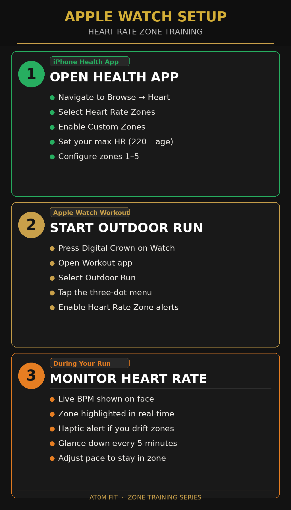

What's Inside
57 PAGES. 9 CHAPTERS.
ONE COMPLETE SYSTEM.
The physiology behind why Zone 2 matters more than any other training zone, and why skipping it means building your conditioning on sand.
A clear breakdown of every zone. What it is, what it builds, when to use it, and the science that makes each one distinct. Not labels. Understanding.

If you've never trained with heart rate zones before, this is your entry point. How to find your Zone 2, set your targets, and start building correctly from day one.
The actual protocol. Frequency, duration, progression, and adaptation. How to build week over week without burning out or stagnating.
Threshold work explained: what lactate threshold actually means, when it's appropriate to train there, and how it relates to the base you've built.
High intensity work done right. What VO2 training actually does, when to program it, and why it only works after you've built the base underneath.
How to layer in high intensity work without destroying your base. The sequencing, the ratios, and the protocols that compound your training instead of blowing it up.
How to configure your Apple Watch (or similar HRM) for accurate zone training. The settings, the caveats, and how to stop relying on guessed zones.


The part most guides skip. Recovery protocols, how to read your body's signals, and how to structure your training calendar so it compounds over time, not breaks down.